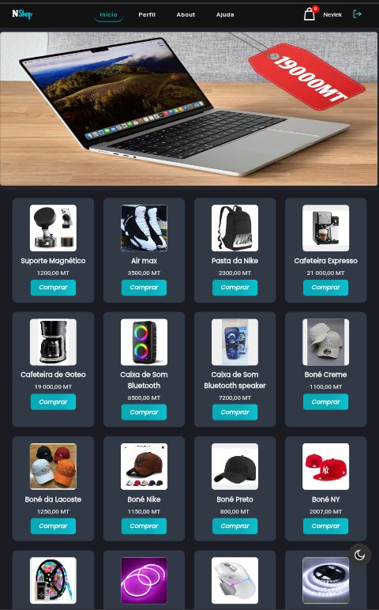
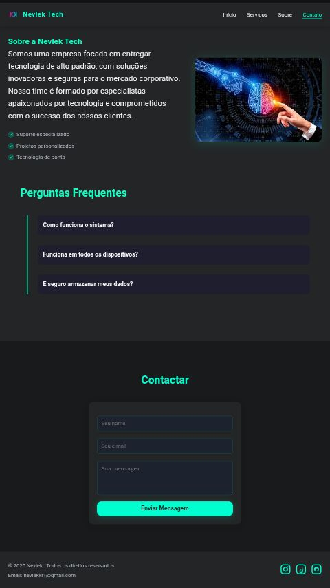

Meus Progetos

Nshop
Nshop é um E-comerce criada no intuito de reforçar minha skill's, é meu primeiro E-comerce, penso em criar mais paginas do tipo enfim! clica no icon abaixo para visualizar.

Nevlek Tech
Nevlek Tech é uma Landing page criada no intuito de reforçar minha skill's, é minha primeira Landing page, penso em criar mais paginas do tipo enfim! clica no icon abaixo para visualizar.